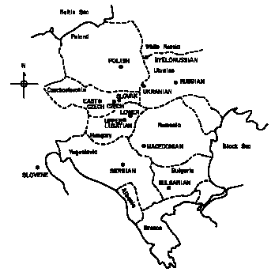
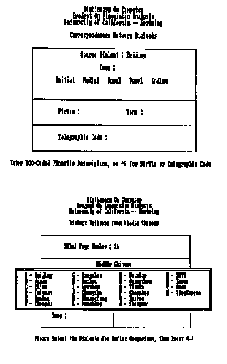
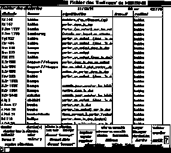
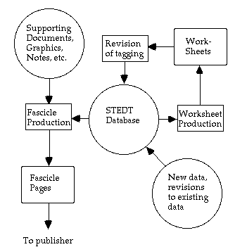
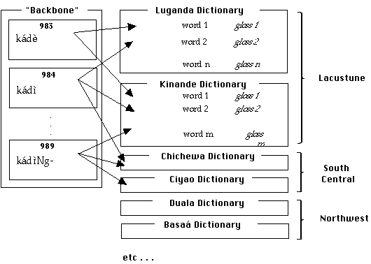

Computer applications in historical linguistics fall into two distinct categories: those based on numerical techniques, usually relying on methods of statistical inference; and those based on combinatorial techniques, usually implementing some type of rule-driven apparatus specifying the possible diachronic development of language forms. The major features of a few of these programs, and mainly those of the rule-driven variety, are reviewed briefly below. The projects reviewed below do not exhaust the field of computational historical linguistics, especially if lexicostatistical approaches are included. Indeed, lexicostatistical approaches dominate the computational historical linguistic literature. Here, however, I will eschew most discussion of this work in favor of one particular such approach since it is this approach that is the focus of this dissertation. The criteria for selecting the particular set of projects is that they have been described in the literature and elsewhere sufficiently for an evaluation. The literature in this subfield of computational historical linguistics is fragmented; starting in the 1960s and 70s a sizable literature on the lexicostatistic properties of language change developed in the wake of Swadesh's earlier glottochronological studies (for example Swadesh 1950) and later (Dyen 1969; Dyen 1970; Dyen 1973; Dyen 1975; Dyen 1992). On the other hand, only a handful of attempts to produce and evaluate software of the rule-application type (for use in historical linguistics) can be found in the literature (Becker 1982; Brandon 1984; Durham and Rogers 1971; Frantz 1970). In general, such computer programs seem to have been abandoned after a certain amount of experimentation. Certainly the problem of articulating a set of algorithms and associated data sets which completely describe the regular sound changes evinced by a group of languages is a daunting task.
(22) Slavic pseudomap superimposed on a geographical map (Dyen 1992:75)

The 'pseudomap' (also known as a configuration) is an arrangement of points (each designating a language) such that the physical distances between the points is proportional to the computed lexicostatistic distances. Dyen claims that this graphical technique, based on the method of 'multidimensional scaling' of (Black 1976), works in some cases where lexicostatistical dendrograms do not. It provides a 'nonhierarchical approach,' suitable for cases where 'wave or diffusion effects ... suggest ... some sort of spatially oriented classification to supplement the hierarchical classification' (Dyen 1992:71). Of course, the points can be arranged in a space with any number of dimensions, and Dyen notes that the choice of number of dimensions is strongly influenced by the data; miraculously or implausibly depending on one's point of view, it turns out that for linguistic pseudomaps, 'two dimensions (n = 2) turns out to be appropriate in every case'.
One last criticism of these methods: the lexicon provides only one incomplete perspective on the degree of relatedness; even if a comparison of lexical items from a set of languages produced a map which exactly overlaid a geographic one, this would not be completely persuasive. A complete picture should take into account a broader spectrum of linguistic structure, including morphology, syntax, and semantics (cf. for example (Nichols 1992, Nichols 1994) which treat the issue of relatedness without reference to specific lexical items).
For each associated set of forms which are judged to be related, an artificial form is constructed which fills the role of their common ancestor within the model. The letters in these reconstructed forms stand for the phonemes of the extinct language. The aim is to make the reconstructions in such a way that the history of each form does not have to be written separately. Instead, a history is written for each phoneme in the original language, and from these the history of the forms can be inferred. (Kay 1964)
Kay confines himself to the problem of finding correspondences between forms from pairs of modern languages, noting that his method can be extended to any number of languages with 'only trivial modifications' (Kay 1964:5).
Applying the terminology of reconstruction in a particular formal sense useful for his exegesis, Kay calls a correspondence 'an ordered pair of strings where the first member is taken from one extant languages and the second from another [and written] ... separated by a stroke, e.g., 'abcd/xyz'' (Kay 1964:6). He considers all possible decompositions of each string into substrings, which are then associated with the corresponding substrings from the other member of the pair:
(23)
(i) a/x bcd/yz
(ii) a/xy bcd/z
(iii) ab/x cd/yz
(iv) ab/xy cd/z
(v) abc/x d/yz
(vi) abc/xy d/z
(vii) a/x b/y cd/z
(viii) a/x bc/y d/z
(ix) ab/x c/y d/z
These decompositions, together with the initial correspondence, represent all the possible decompositions of 'abcd/xyz' into matching sets of substrings. Noting that in general most of these theoretically possible decompositions have 'no significance for reconstruction', Kay turns to the problem of discovering which of the decompositions do represent valid correspondences. He gives an illustrative pair of items from English and German:
(24)
that/dass
and notes that of the twenty possible decompositions, '...[o]nly one of these has a correspondence for each Indo-European phoneme' (Kay 1964:8).
(25)
th/d a/a t/ss
Using an algorithm for creating a gigantic logical disjunction of the possible correspondences over a set of data, Kay proceeds to show how the unfruitful decompositions can be eliminated, retaining only the smallest (i.e. most parsimonious) set of decompositions for which 'every correspondence represents a phoneme of the language being reconstructed' (Kay 1964:12). In a sense, the algorithm is presented as an exercise in predicate calculus.
Certain modifications of these algorithms, Kay notes, would make it possible to handle certain troublesome cases. Metathesis could be handled by starting with 'a list in which the forms in one language were paired with all permutations of their equivalents in the other'. And for cases of loss (where 'an ancient phoneme is without issue in some of the daughter languages') he proposes to insert a 'zero' at the beginning and end of each word and between each pair of phonemes.[1] Kay notes that this solution, while straightforward, 'results in a possibly unacceptable increase in the amount of computation to implement the theory.'
Kay concludes with a section on implementing the theory, noting that
the possibility of applying the method mechanically is open, but barely so.[2] The author estimates that it would take some four or five hours of computer time to analyse a list of a hundred pairs of forms. Where the connection between a pair of languages is remote, this may well be worthwhile, for the amount of human labor that is put into such problems is often prodigious, and it is inefficiently spread out over a long period of time. (Kay 1964:18})
In the course of implementing his algorithm, Kay actually tried it on the following set of words, which, he says, is 'as small a set of data as the method can be applied to and produce a non-trivial result':
(26) A small set of cognates for mechanical comparison[3]
English German
on an
nut nuß
that daß
bath bad
It would be altogether out of the question, Kay notes, to apply the method even to such a corpus as this without machine aid. While 'conceptually trivial,' the computation required 'rapidly becomes prohibitive as the number of variables increases. The belligerently incredulous are urged to try the example for themselves' (Kay 1964:18).
Computers have come a long way since 1964; however, the complexity of many of the computations associated with computer implementations of the comparative method has not changed. As noted below in the section on the Reconstruction Engine ([[section]]6), some of these problems (which are NP-hard[4]) could challenge even the limits of modern supercomputers.
The program as first envisioned was to operate on 'consonant-only' transcriptions of polysyllabic morphemes from four Amerindian languages (as shown in (27) below). The program would take a modern form, 'project it backwards' into one or more proto-projections, then project these proto-projections forward into the next daughter language, deriving the expected regular reflexes. The lexicon for this language would be checked for these predicted reflexes; if found, the program would repeat the projection process, zig-zagging back and forth in time until all reflexes were found. For example, given Fox /poohke<<samwa/ he cuts it open, the program would match the correct Cree form, as indicated in (27).
(27) Potential Proto-Algonkian cognates (after Hewson 1974:193-94)
Language C1 C2 C3 C4 Reflex Gloss
Fox p hk <<s m poohke<<samwa 'he cuts it open'
Cree p sk s m pooskosam 'he cuts it open'
Menomini - - - -
Ojibwa p <<sk <<s n pa<<sko<<saan 'he cuts it down
Ojibwa p kk <<s n pakkwee<<saan 'he slices off a part'
There were problems with this approach. In cases where no reflex could be found, (as shown in (27) above where no Menomini cognates for this form existed in the database) the process would grind to a halt though other cognate forms in other languages remained to be identified. Recognizing that 'the end result of such a programme would be almost nil' (Hewson 1973:266), the team developed another approach in which the program generated all possible proto-projections for the 3,403 modern forms. These 74,049 reconstructions were sorted together, and 'only those that showed identical proto-projections in another language' (some 1,305 items) were retained for further examination. At this point Hewson claimed that he and his colleagues were then able to quickly identify some 250 new cognate sets. (Hewson 1974:195). The vowels were added back into the forms, and from this a final dictionary file suitable 'as input to an automated typesetting machine' was created. A cognate set from this file, consisting of a reconstruction and two supporting forms, is reproduced in (28) below.
(28) Proto-Algonkian cognate set (after Hewson 1973:273)
Language Form Gloss Protomorpheme
* (ProtoAlq.) PEQTAAXKWIHCINWA BUMP (*-AAXKW)
M (Menomini) P3QTAAHKIHSEN HE BUMPS INTO A TREE OR SOLID...
O (Ojibwa) PATTAKKOCCIN BUMP/KNOCK AGAINST...[STHG]
'derivational etymological' technique, which works primarily for a given 'mother' language to a specific 'daughter' dialect ... It assumes that both the etyma and the corresponding 'modern' forms are known, e.g., Classical Latin LUPUM, VÎTAM, SACRÂTUM, modern Spanish lobo, vida, sagrado. (Eastlack 1977:82).
The creators of Iberochange made the following linguistic assumptions:
1) linguistic change has two components -- systematic sound change and various types of non-systematic change such as analogical change, sporadic sound change, dialect leveling, etc.
2) systematic sound change can be described in terms of a fully explicit ordered set of rules ...;
3) at some point in time words differ from ... related forms at some earlier time only in having undergone the ... systematic set of sound changes specified by the set of rules mentioned in ... 2). (Eastlack 1977:81).
Since many symbols needed were not available in the 'computer alphabet,' the developers devised a system of symbolization by which it would be possible to transcribe input items without ambiguity. Specifically, syllable and morpheme boundaries were encoded so that the program could avail itself of them and complex segments such as /ts/ and /dz/ were retranscribed with single letters (/C/ and /Z/. Examples are shown below:
(29)
Orthography 'Symbolization'
fortiam #FOR TI AM#
caecum #KAE KUM#
bracchium #BRA:K KI UM#
Forty two ordered rules (with subrules) describe the development of Latin to Spanish. Rule 3, which is used in the example in (30) below, says 'word-final M becomes N following a stressed vowel; elsewhere it is deleted.' Several step-by-step derivations are given, such as:
(30) Derivation of Spanish cabeça from Latin capitiam, cf. CL capitem[5]
Starting form #KA PI TI AM#
Rule 3 #KA PI TI A#
Rule 7(a) #KA P'I TI A#
Rule 7(d) #KA P'I TIA#
Rule 7(g) #KA P'E TIA#
Rule 15 #KA P'ET TIA#
Rule 16(a) #KA P'EC CA#
Rule 22 #KA B'EC CA#
Rule 23 #KA B'E CA#
Rule 27(a) #KA B'E C;A#
According to the author, the program provides 'rather conclusive evidence in support of the theory of language change propounded in King's (1969) discussion of Historical Linguistics and Generative Grammar.' (Eastlack 1977:84); this says more about the generality and durability of the program and its algorithms than I could. Like the Reconstruction Engine, Iberochange is written in SNOBOL4, a powerful text-oriented programming language.
The linguist who suspects a genetic relationship between two languages first compares lexical items of similar meaning in the two languages. Should he, in so doing, find a number of word pairs that are phonetically similar, he would be aware that this shows him little or nothing about the possibility of genetic relationship (Frantz 1970:353).
Noting that such similarities may be coincidental, Frantz goes on to elaborate how the COMPASS program attempts to 'weed out' the bulk of such accidental correspondences by statistical techniques. Correspondences which are frequently observed are more likely to be the result of genuine inheritance than those which are unique or of low frequency. Frantz uses 'hypothetical data' (reproduced in (31), his Table I, below) in supporting the explication of the operation of COMPASS.
(31) Hypothetical data from 'Table I' (after Frantz 1970:354)
Language
A B gloss(es)
(1) pakol phogor hand
(2) feku fögu water/liquid
(3) likel riger woman
(4) pano phono tree/wood
(5) kene khene mother
(6) xipo xöbo uncle/elder
(7) pepo phöbo stone
(8) xana xana gourd
(9) fapa faba good
(10) kitu khödu tomorrow
(11) kito khotu red
Note that COMPASS requires the investigator to 'arrange the data for input so that the program compares the characters that he assumes would have to correspond if the members of each pair are cognate' (Frantz 1970:354):
(32)
p a k o l
ph o g o r
p a n o
ph o n o
The investigator must leave blank spaces in the appropriate places to account for lack of one-to-one correspondence in number of characters (the constituent size problem raising its ugly head again) (Frantz 1970:354).
The program can then compute the frequency of occurrence of each correspondence (only the correspondence p:p is illustrated below). The program lists the segmental correspondences, their frequencies, and an indication of the word pair which contains each correspondence.
(33) Correspondence with count and list of supporting forms
p:p tokens: 3
(1) p akol phogor hand
(4) p ano phono tree/wood
(7) p epo phöbo stone
The program computes a correspondence value, essentially an estimate of how well attested it is, using the following formula:
correspondence value = F(ISU(i=0,n,(vi)),n)
where: n = number of comparable segments
and: vi is the frequency of the correspondence at position i
This value is used to rank the correspondences with respect to each other. Frantz notes that his program is 'merely a tool; it is no substitute for the ingenuity and experience of the investigator. Rather it is a partial remedy for the limitations placed upon the investigator by the time-consuming nature of data-manipulation' (Frantz 1970:353)
COMPASS, according to Frantz, has been used for Proto-Algonkian, Cheyenne and Arapaho, 'with each other and with Bloomfield's PA'. He notes a difference in the comparison of two languages at a time as opposed to three, and that this poses a problem for his algorithms:
The output that resulted from the simultaneous comparison of PA, Cheyenne, and Arapaho, while useful, is not nearly so useful as the output of pairs [i.e. pairwise comparisons]. In many sets only two of the words, but not the third, are cognate; the result is that there is a disproportionately large number of correspondences listed which are not regular. The three-language program would be more useful after work with the three pairwise combinations of the languages enables the investigator to remove sets which contain a member which is probably not cognate. (Frantz 1970:356)
The probative value of additional data and the problems associated with it have been discussed in [[section]]1.6.9.
According to Guy, COGNATE operates as follows:
given the same [sic] list of words in two different languages, COGNATE will determine which words are likely to be regularly derivable from each other, and which are not. The longer the list, or the more closely related the two languages are, the better the performance of COGNATE. For instance, suppose that you have typed into a file 200 words in English (one per line), and in another file the same 200 words, in the same order, in German (again one per line). English and German are fairly close languages. Given these two files, and no other information whatsoever, COGNATE will be able to tell for instance that English 'TWENTY' and German 'ZWANZIG' are almost certainly derivable from each other, and so are English 'HONEY' and German 'HONIG'; but it will also tell you that English 'HORSE' and German 'PFERD' are not so related. COGNATE will also tell you, when comparing 'TWENTY' with 'ZWANZIG', that English 'T' corresponds to German 'Z'. ' (Guy 1992)
Guy notes that because of the 'very nature' of the algorithm, the program is not sensitive to the actual scheme used for encoding the data: the program would work just as well if the letters were shifted using a simple-substitution code.
For instance, if you have encoded the English data by shifting one letter forward (so that 'TWENTY' becomes 'UXFOUZ') and the German data by shifting one letter backward (so that 'ZWANZIG' becomes 'YVZMYHF'), COGNATE will still able to tell that 'UXFOUZ' and 'YVZMYHF' are related, and that 'IPSTF' ('HORSE') and 'OEDQC' ('PFERD') are not. (Guy 1992)[6]
COGNATE is supplied with three sample files of 200 words each, English, German, and Dutch. Like many of the historical linguistic applications described here, COGNATE has a checkered development history. It was first implemented around 1978 in Simula 67 on a DEC KL10. Then, as a 'self-inflicted challenge which I did not expect to win', Guy translated it into Turbo Pascal, to run on his Kaypro II. It is now available over the Internet at a number of FTP sites.
(34) A Dialect record in DOC (cited from Fig. 7 in Wang 1970)
Dialect Tone Initial Medial Nucleus Ending
0052 192- 3 L H1 WN 7
PEKING 3 L U A N
XI-AN 3 L U A Z
TAI-YUAN 3 L U A Z
HAN-KOU 3 L U AE Z
CHENG-DU 3 L A N
YANG-SHOU 3 L U O Z
WEN-ZHO 3B L U 03
CHANG-SHA 3B N 0 Z
The data in (34) above is to be interpreted as follows: the line beginning '0052' (the so-called telegraphic code[7]) records the Middle Chinese form (with cross reference 192- to another source, the Qiè-Yùn); 'H1', 'WN', and '7' are coded representations of phonetic characters. Following this are eight dialect records, giving reflexes of this word in modern Chinese dialects, also in a coded phonetic form.
At least four versions of this database and associated software were produced (described in Lyovin 1968; Streeter 1972; Cheng 1993:13). Originally processed as a punched-card file on a LINC-8, the program underwent several metamorphoses. An intelligent front-end was developed in Clipper (a microcomputer-based database management system) which allows the user to perform faceted queries (i.e. multiple keyterm searches) against the database and also contains the actual Chinese characters. (Yaruss 1990) So, as shown in the upper screen in (35), for example, the user could select a particular dialect (in this case Beijing), and search for words containing particular phonological constituents (Initial, Medial, etc.). The lower screen shows to retrieve the reflexes of a particular MC form (from page 16 of the H\any<<u F--any[[caron]]an Z\îhu\î Anonymous 1962 in this case).
(35) User interface to the Clipper version of DOC (Yaruss 1990:215)

The database is also available as a text file (slightly over a megabyte) containing forms in 17 dialects for some 2,961 Chinese characters (Cheng 1993:12). DOC has no 'active' or rule-application component: it is a database of phonologically analyzed lexemes organized for effective retrieval.
Use your favorite editor to create a list of cognates, in the following format. Put each language's cognates in a column; and each of the cognates of a single proto-form in a line. Separate the columns by a tab or spaces.
Veatch gives some contrived forms, illustrated below in (36).
(36) Contrived cognates for use with CARP
cognate1 COGNATE1 KAGNET_1
cognate2 COGNATE2 KAGNET_2
cognate3 COGNATE3 KAGNET_3
cognate4 COGNATE4 KAGNET_4
cognate5 COGNATE5 KAGNET_5
cognate6 COGNATE6 KAGNET_6"
The coding of the source data is rather strict, notes Veatch:
Notice that where segments are deleted, i.e., in one language there is a segment present but in another it is missing, [...] an underscore is inserted in the location in the cognate which lost the segment. This is so that corresponding characters in the cognates actually correspond, and where a character corresponds to a deleted segment, the underscore gives it something explicit to correspond to. [...][W]hen you have edited the cognate file, all the cognates on one line have the same number of characters, so that corresponding characters actually correspond in the cognate. Thus, extra morphemes in one language must be deleted, to make the correspondences right.
Of course, in reality, considerable insight into the phonologies of the language studied, whether human or machine, is required to provide a correct alignment (this fact was noted above in [[section]]1.4, and will be discussed in more detail in [[section]]5.3).
Having created a set of putative cognates, Veatch's program next proceeds to match the 'corresponding' segments of each form, producing a list of 'merged proto-forms' [my term] as shown in (37) below. The resulting proto-forms have a rather 'strange-looking form'. For example, the above cognates would result in the following list:
(37)
cCK oOA gGG nNN aAE tTT eE_ 111
cCK oOA gGG nNN aAE tTT eE_ 222
cCK oOA gGG nNN aAE tTT eE_ 333
cCK oOA gGG nNN aAE tTT eE_ 444
cCK oOA gGG nNN aAE tTT eE_ 555
cCK oOA gGG nNN aAE tTT eE_ 666
Veatch explains:
[...] Each phoneme [...][of each] proto-word is represented by a correspondence-set, so that an 8-segment proto-form will look like 8 queer words, each formed from the concatenation of corresponding segments in the cognates. So each line is really the proto-word which the cognates are related to. It's just that instead of writing it in letters, it is written in correspondence-sets.
Next another program picks out all the unique correspondence sets and makes a list of them (shown in column (1) of (38) below). The linguist adds a column (as shown in column (2) in (38) below) for the reconstructed ancestor to allow the computer to recode the 'queer words' of (37) into protoforms as shown in (39) below.
we need to make a list of all the correspondence sets, and specify what characters to use to represent each correspondence set in the proto-allophone forms. So for example, we want a list like this:
(38) The user supplies an ancestor for each 'proto-allophone'
(1) (2)
Proto-allophone Reconstructed ancestor (added by user)
cCK k
oOA o
gGG g
nNN n
aAE a
tTT t
eE_ e
111 1
222 2
... ...
etc.
A final program does the actual retranscription:
(39) Retranscription of the 'queer words' according to the 'proto-allophones'
*kognate1
*kognate2
*kognate3
*kognate4
*kognate5
*kognate6
Veatch goes on to point out that the allophones file (exemplified in (38) above) can be further refined to identify 'proto-allophones'.
(40)
Look at the distribution of the proto-allophones, and determine which ones may be collapsed into one category, using complementary distribution and phonetic similarity as criteria. When you find proto-allophones that may be collapsed, then go back and edit the allophones file, which specifies the proto-sounds for each correspondence set, and specify the same symbol for each collapsed pair of allophones. Then you can redo codecorr and ccon,[9] if necessary, to see if any further reconstruction is possible, and re-edit the allophone list, and so on, until nothing else can be collapsed.
Veatch does not say whether this program has ever been used on real data, and he provides no such examples. A similar procedure of aligning input data according to semantic and phonological criteria is required by the WORDSURV and COMPASS program described elsewhere in this chapter.
(41) 'Properly aligned word forms' in WORDSURV (Wimbish 1989:43)
(1) (2) (3) (4)
Group Reflex [metathesis] Language Abbreviation
0 -- no entry -- R
A faDer E
A fater G
A padre >4 S
B ama iT
C bapa -- MPB
C bapak-- I
C bapa da h
D tataN wm
D tatay ab
In addition to the a priori semantic grouping of reflexes by gloss, the linguist must also re-transcribe the data in such a way that each constituent of a reflex is a single character, that is, 'no digraphs are allowed. Single unique characters must be used to represent what might normally be represented by digraphs ... e.g. N for ng' (Wimbish 1989:43). The program also requires that part of the diachronic analysis be carried out before entering the data into the computer in order to incorporate that analysis into the data. For example, when the linguist hypothesizes that 'a process of sound change has caused a phone to be lost (or inserted), a space must be inserted to hold its place in the forms in which it has been deleted (or not been inserted)' (Wimbish 1989:43). That is, the zero constituent must be represented in the data itself. The program also contains a 'provision for metathesis. ...Enter the symbols >n (where n is a one or two digit number) after a word to inform WORDSURV that metathesis has occurred with the nth character and the one to its right' (Wimbish 1989:43). An example of this may be seen in column 3 of (41). This provision is clearly intended to allow linguists to 'correct' (my term) for sporadic changes such as metathesis, bringing the proper elements into juxtaposition for comparison.
To represent tone, the author notes that 'there are at least two solutions. The first is to use a number for each tone (for example 1ma3na). The second solution is to use one of the vowel characters with an accent. ... The two methods will produce different results' when the analysis is performed (Wimbish 1989:44). While the last statement may surprise some strict empiricists (after all, the same data should give the same results under an identical analysis), it should come as no surprise to linguists who recognize that the selection of unit size, the type of constituency, and other problems of representation may have a dramatic effect on conclusions.[10] Two requirements of this program 1) that forms be grouped a priori by gloss and 2) that segments be aligned according to their supposed correspondences are fraught with methodological difficulty: these requirements force the linguist to decide a priori which forms might be related semantically and also to supply a singular phonological analysis (both synchronic and diachronic. The phonological inventory is thus limited to segments. In passing, the lexicostatistics which are computed are based on the 'Manhattan distance' (in a universal feature matrix) between corresponding phonemes from different languages as a measure of their affiliation. The validity of this measure for establishing genetic affiliation is suspect: corresponding phonemes may be quite different in terms of their phonological features without altering the strength of the correspondence or the closeness of the genetic affiliation. Also, the metrics of features spaces are notoriously hard to quantify, so any distance measures are themselves likely to be unreliable.
From the point of view of MARIAMA, a hypothesis is a relationship established between several records of the same data type. This relationship is defined via a system for marking pertinent data (un système de pertinence particulier). In the most basic sense, the linguist working on a comparative project -- ultimately to establish genetic affiliations, to perform phonological, dialectological, morphological, and semantic analyses -- proposes one or more hypotheses concerning the data under comparison. So, for example, given the three forms in (42) below:
(42) Connections established between forms by MARIAMA
Exemple : le rapprochement particulier effectué entre les trois formes suivantes :
'Dialect'[11] Entry Meaning
kaado debe damer, tasser en frappant
touareg atAbbi taper avec la paume de la main
bozo tEbE piétiner
The program permits the user to:
1. establish a hypothesis about the relationship exhibited by the forms (by linking them together according to a key)
and
2. define the nature of the relationship by giving the set of linked forms a name. The name used can define a semantic relation (i.e. some sort of cover gloss for the forms) or a phonological relation (i.e. a tentative reconstruction).
The hierarchical structure of MARIAMA provides for three 'levels' of representation of the data; the second level provides five 'sublevels' to record relational hypotheses about the relationship between words. These levels provide a means for unifying data from different sources into a consistent description and can become more abstract as the levels go up.
Level 0 is the 'reference level' ('niveau de référence'); contains the raw data. This level is provided to allow the research to record the source data just as it is found in the source.
Level 1 is the 'work level': this is the level at which the user can 'homogenize' the data for his or her own purposes, retranscribing the data and normalizing glosses. In (43)(a) and (b) below Nicolai supplies examples of various transcribed forms which can be homogenized into a single transcription (not shown) using the program (the homogenization, as noted above, is implement by the user, not by the program). (43)(a) illustrates the equation of forms from two source (abbreviated RN and OY) which differ in their transcription. (43)(b) illustrates a similar equation with forms from three sources. In (43)(c) he gives four glosses from different sources which can be unified into a single set. The process of homogenization is carried out 'by hand:' that is, the linguist marks each term in the equations himself.
(43) Examples of 'Homogenization':
- of phonetic transcriptions:
(a) RN : saayi = OY : sa:ji
(b) FD : touri = RN : tuuri = OY : tu:ri ; etc.
- of semantic distinctions:
(c) RN : 'palmier-doum' = XX : 'espèce d'arbre' = YY : 'arbre dont le fruit est utilisé pour [...] et les feuilles[...]' = A.P. : 'Balanites thebaica' ; etc.
Level 2 is the 'research level' ('niveau des hypothèses'). It pertains to the various types of linguistic hypotheses (discussed above) which may be applied to the data. Level 2 is the point at which data is grouped into sets for further research; to this end, five 'sub-levels' are provided, amounting to five plans of analysis (described below).
Level 3 is an additional hierarchical level. Basically it provides another level of data grouping above level 2 for consolidation of hypotheses stated at lower levels used, for example, for bringing together 'etyma' which are supported by several 'roots' (radicaux, illustrated in (44) below) already reconstructed. It provides two optional analysis plans.
As noted above (in discussing Level 2, the research level), MARIAMA provides five plans of analysis over the data set. These five plans correspond to five different sets of hypotheses, each with its own particular attributes:
- Le niveau 2 des 'références'
- Le niveau 2 des 'reconstructions'
- Le niveau 2 des 'clefs'
- Le niveau 2 des 'classificateurs'
- Le niveau 2 de 'travail'
- Le niveau 2 des 'références' : the level of intuitions and hypothesis advanced without necessarily having a solid justification. Preliminary research level.
- Le niveau 2 des 'reconstructions' : Represented here are sets of data supported by linguistic reconstruction in the 'strict sense'. Alternative forms may be specified along with justifications concerning phonetic regularities in the form of features, rules, and rule changes.
- Le niveau 2 des 'clefs' : this plan provides a means to 'index' the data according to a classificatory grid. The units of the grid may be semantic, ethnographic, linguistic, or otherwise. A multivalued classification is permitted so that the same form may receive several classifications; consequently, this plan permits working with forms in terms of 'features' (traits), or in terms of 'matrices.' The use of the word clef (key) is probably intended to evoke the notion of a limited set of possible values used in classifying the data.
- Le niveau 2 des 'classificateurs' : this plan also permits an 'indexation' of the forms, but at organized according to 'classification types.' I am not sure how to interpret the function of this plan.
- Le niveau 2 de 'travail' : this plan allows the specification of tentative hypotheses based on alternative organization of data created at other levels. It is for experimentation and intermediate groupings.
MARIAMA is a complicated program with a large number of features, many as yet only partially documented. The flavor of the program, which is written in 4D for the Macintosh, can be glimpsed in (44) below, which shows a list of forms from different languages which have the same root (babba), meaning something like 'carry on the back.'
(44) Display of words for *babba 'carry on the back' in MARIAMA

To support the creation of the dictionary thesaurus, a sizable lexicographic database has been created from a variety of disparate sources including monolingual and bilingual dictionaries, word lists, published and unpublished articles and manuscripts, and other linguistic databases and files. As of April 1995, the database contains approximately 232,000 language forms from 250 Sino-Tibetan languages and dialects. A portion of these have been grouped into some 2,000 cognate sets for eventual publication in the dictionary-thesaurus. Problems concerning transcription and representation, semantic relationships, etymologization, and indexing are discussed elsewhere in this dissertation.
The production of the printed thesaurus requires the integration of a wide variety of documents, including graphics, a large variety of marginalia and notes, and lexicographic and etymological information. The essence of the process is illustrated in (45) below.
(45) Components of the STEDT document production system

The database is an essential sideline to the production of the published work, though it may turn out to be one of the most useful results when it is made available to the research community. (Lowe 1993, Matisoff 1991)
The CBOLD database consists of a number of parallel bilingual dictionaries with an overlaid semantic and phonological analysis. Functioning as the 'backbone' of the database are existing reconstructions of Bantu, notably those of Guthrie and Meussen (Guthrie 1967; Meussen 1967). The lemmata in these dictionaries are 'aligned' etymologically as illustrated in (46).
(46) File design for CBOLD (N.B. only six of the set of 'core' dictionaries are depicted)

To the extent possible, dictionaries and other lexicographic data is acquired through scanning and OCR (optical character recognition). Software to parse these texts into 'fields' which can be loaded into the database is being developed. The data acquisition and preparation process is discussed in [[section]]3. Tools for searching the database on the basis of morphological and phonological structure are planned. The database and the tools for using it are being developed in an environment which will allow researchers access on most of the popular computing platforms, at least Apple Macintosh and IBM compatibles. Several types of tools will be developed:
Besides producing an up-to-date, revised, and expanded etymological dictionary of Proto-Bantu, other types of documents which might be useful are synonym lists, phonological inventories with supporting forms, thesauruses, and multi-lingual dictionaries. In general, these tools will operate on the database as a whole and produce sizable documents. Thus, the users of CBOLD will be able to support a certain amount of 'demand publishing', providing interim and final versions of their analyses in a timely fashion.
Queries of high complexity need to be answered by the database. The queries may refer to specific segments or broad classes of segments. They may refer to adjacency or boundary conditions defined by morphological or phonological criteria. Some approaches to providing these types of facilities are discussed in [[section]]5.
Several of the programs are explicitly 'corpus-based:' (CBOLD, CUSHLEX, DOC, the Electronic Neogrammarian, MARIAMA, the Reconstruction Engine, STEDT, and WORDSURV) and provide some sort of functions for diachronic analysis. Others provide only apparatus for analyzing the data, and sometimes include some sample data, either real (as in COGNATE, Iberochange, PHONO, and Kay's test program) or made-up (COMPASS, CARP). They differ substantially in the portion and proportion of the lexicon treated. Veatch has not said if his programs have actually been used on real data; Kay's experiment used only eight forms in two languages, and he said that that was a lot given his approach.[12] Others are large database projects incorporating tens and sometimes hundreds of thousands of forms in a myriad languages.
Some programs require that the data be initially arranged in some fashion, either by semantic relationship (WORDSURV) or cognacy (DOC).
Some programs require prior segmentation according to some abstract constituent structure prior to computer analysis (COMPASS, DOC, the Electronic Neogrammarian, Iberochange, and WORDSURV). Some provide no means to do this at all, representing such segmentation implicitly (MARIAMA, CUSHLEX). Others, like PHONO and the Reconstruction Engine, can perform phonological analysis on constituents of a variety of sizes, including features, segments, or larger constituents. I should point out that to be general, the phonology and phonotactics should be parameters to the extent possible, so one can test different structural and phonological hypotheses without having to recode the data.
WORDSURV counts correspondences in order to arrive at a statistical measure of their 'strength.' Hewson's program finesse their actual representation as a distinct computer object; indeed he notes that 'the method does not use the correspondences in order to predict possible cognates, but the reflexes.' Clearly however, the 'proto projections' used to bring cognates together rely on the notion of correspondence. Although the columns of a dialect record in DOC might reflect some kind of genuine correspondence, it is not clear what status the authors of the program believe them to have, inasmuch as DOC is meant to test the hypothesis of lexical diffusion. Recently however, the data in DOC has been used to test the notion of regular correspondence among Chinese dialects.
Of these programs only the Reconstruction Engine actually generates cognate sets with complete reconstructions on the basis of correspondences and semantic information. The Hewson program produced pieces of cognates: consonants in the languages treated show 'greater regularity and simplicity' (Hewson 1974:192) than vowels; vowels were consequently ignored. Software being developed on the CBOLD and STEDT projects will take the some of the ideas incorporated in these programs a step further, implementing the cognate sets and reconstruction generating algorithms developed for the Reconstruction Engine, the database approaches of MARIAMA and CUSHLEX, as well other features borrowed from these programs.